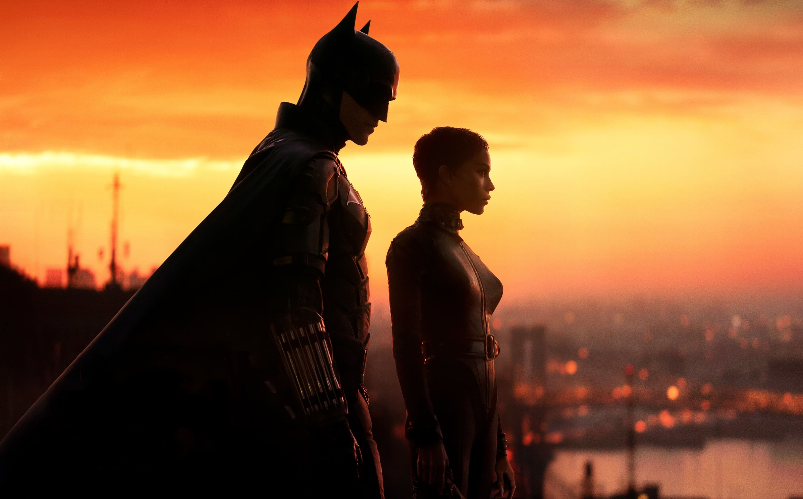
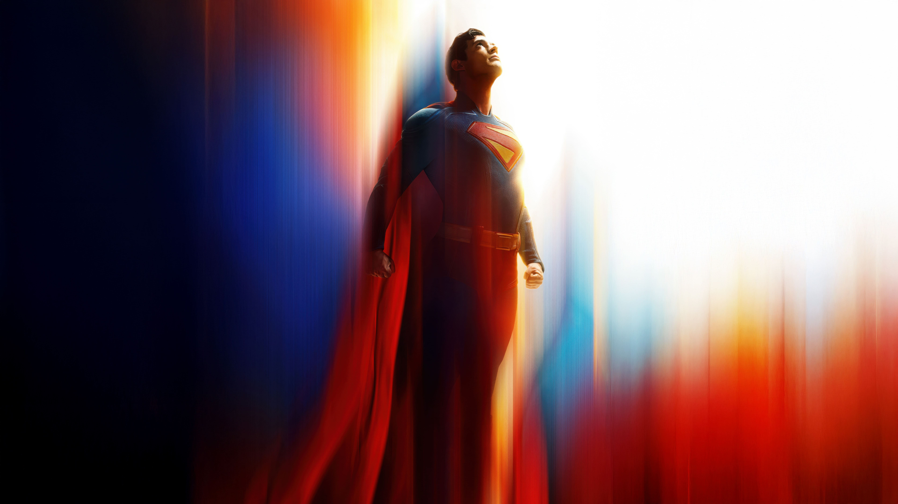
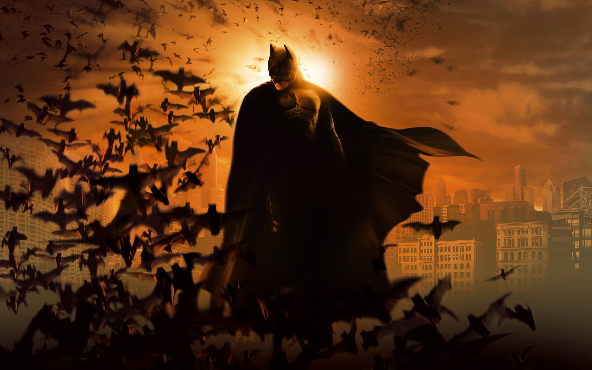
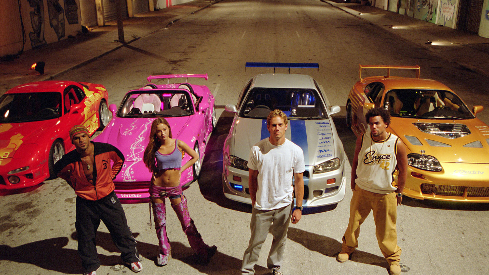
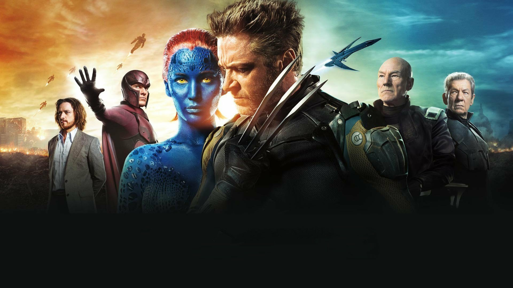
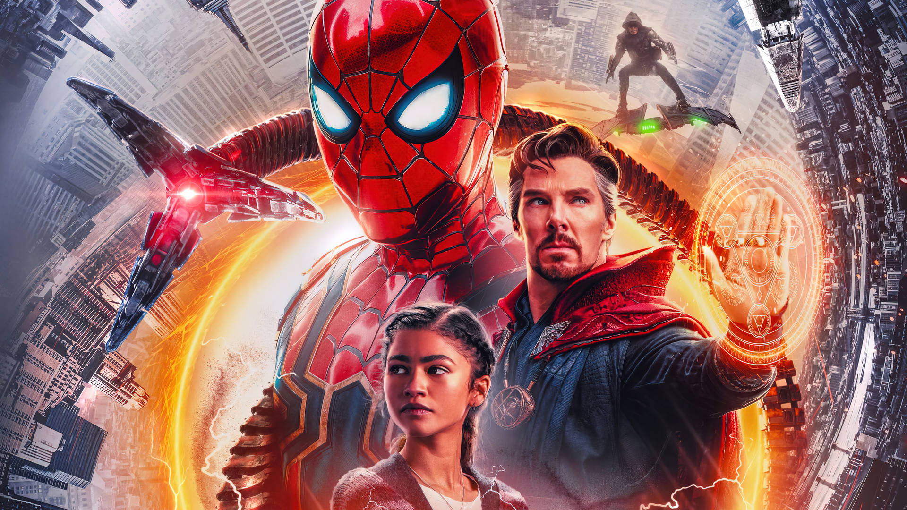
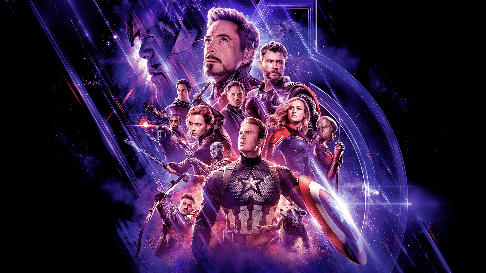

CINEFILIA EM 46 ATOS
São Paulo
elarssen.design
Designer Gráfico
Front-End Developer
Olá, sou Erick. Seja bem-vindo(a) ao meu santuário cinematográfico! Aqui, cada filme diz
um pouco sobre mim, filmes que me trouxeram risos, lágrimas e reflexões. Mas atenção,
aqui só tem filmes blockbusters de um simples rapaz, se você é metido(a) a crítico(a) de
cinema e gosta de filmes cults, aqui não é o lugar. Enfim, deslize para descobrir quais
filmes fizeram parte da minha vida, que tocaram meu coração e moldaram minha visão.
#46 GLADIADOR
2000
2 h 35 min
Drama
14+
Gladiador é um daqueles filmes que me pega na alma. A história de honra, vingança e
superação do Maximus me emociona toda vez. A força do personagem, mesmo diante das
perdas e injustiças, me inspira profundamente. A trilha sonora é épica, a fotografia é
belíssima e a atuação de Russell Crowe é simplesmente inesquecível. É mais do que um
filme de guerra, é uma lição sobre coragem e dignidade.
#45
GAROTA EXEMPLAR
2014
2 h 29 min
Suspense
14+
É um thriller que me prendeu do início ao fim! Ben Affleck, um dos meus atores
favoritos, entrega uma atuação impecável em meio a uma trama cheia de reviravoltas
alucinantes. O filme joga com minha percepção, me fazendo duvidar da integridade do
protagonista a cada cena. Suspense apoteótico, tenso e imprevisível, do jeito que eu
gosto!
#44
INFILTRADO
2021
1 h 59 min
Ação/Suspense
16+
Esse é um daqueles filmes que faz minha dopamina explodir! Jason Statham, mestre da
ação, entrega uma performance intensa em uma trama de vingança implacável. As cenas de
ação são brutais e cheias de tensão, e a reviravolta da história me prendeu do começo ao
fim. É o tipo de filme que me faz vibrar com cada golpe e cada estratégia do
protagonista!
#43
THOR RAGNAROK
2017
2 h 10 min
Aventura/Ficção Científica
12+
É um dos meus filmes favoritos do UCM, pois além de ser crucial para os desdobramentos
da franquia, tem efeitos visuais incríveis e uma dose perfeita de humor e adrenalina. A
interação entre os personagens, a trama envolvente e as cenas épicas me mantêm vidrado
do começo ao fim!

#42
THE BATMAN
2022
2 h 56 min
Ficção Científica
14+
É um filme incrível que mostra o início do Cavaleiro das Trevas em uma Gotham
deslumbrante e sombria. O filme me prende pela atmosfera tensa e pelos personagens
icônicos, como o Charada e a Mulher-Gato. O Batman, mais sombrio e sanguinário, é
fascinante, trazendo uma nova perspectiva ao herói.
#41 F1 O FILME
2025
2 h 35 min
Drama
12+
Esse filme me conquistou desde os primeiros minutos. Sempre fui fascinado pela Fórmula 1, não só pela velocidade, mas pela precisão, estratégia e emoção que ela carrega. Esse
filme vai além das pistas: ele mergulha no universo dos pilotos, nas rivalidades
históricas, nas decisões de milésimos de segundo que definem campeões. Tudo isso me
prende e me faz vibrar como se eu estivesse no grid de largada. É mais do que um filme
sobre corrida, é um tributo à genialidade do automobilismo.

#40 SUPERMAN
2025
2 h 9 min
Ficção Científica
14+
Superman me agradou com sua nova energia. A interpretação do David Corenswet traz um herói carismático, vulnerável e cheio de humanidade. Curti a proposta de explorar temas atuais como identidade, imigrantes e responsabilidade global, com humor e esperança, resgatando o espírito clássico do Superman. É um sopro de otimismo que redefiniu esse símbolo lendário.
#39
O HOMEM INVISÍVEL
2020
2 h 4 min
Ficção Científica/Suspense
14+
O Homem Invisível me surpreendeu do começo ao fim. Gosto da forma como o suspense é construído, com tensão psicológica e um clima angustiante que prende totalmente. A ideia de um inimigo que ninguém vê, mas que está sempre presente, me deixou inquieto. Além disso, o filme aborda temas como abuso e controle de forma inteligente e perturbadora. É um suspense moderno, impactante e muito bem feito.
#38
PERDIDO EM MARTE
2015
2 h 24 min
Ficção Científica
12+
É um filme fascinante porque retrata de forma realista os desafios humanos em Marte,
algo que pode se tornar realidade em breve. Fico completamente imerso nas tentativas de
sobrevivência do protagonista, como se eu estivesse realmente abandonado lá, lutando
contra o tempo e as adversidades.
#37
JACK O CAÇADOR DE GIGANTES
2013
1 h 54 min
Aventura
10+
Jack: O Caçador de Gigantes é a adaptação live action perfeita de uma das minhas
histórias infantis favoritas. A mistura de leveza com tensão cria uma atmosfera que me
prende do início ao fim. É um filme emocionante, com cenas de tirar o fôlego, e me faz
reviver a magia da minha infância de maneira épica.
#36
GOLPE DUPLO
2015
1 h 45 min
Romance/Ação
14+
É um filme que me prende por várias razões. Além de ser protagonizado por Will Smith, um
dos meus atores favoritos, ele mergulha no mundo organizado do crime, cheio de luxo,
ostentação e muita adrenalina. As reviravoltas e plot twists são de deixar qualquer um
sem fôlego.
#35
SEM LIMITES
2011
1 h 45 min
Thriller/Ficção científica
14+
É um filme que me faz imaginar o que eu faria se tivesse acesso ao poder ilimitado da
mente humana. A ideia de desbloquear todo o potencial do cérebro me fascina. A trama é
criativa, cheia de reviravoltas e me prende, deixando a sensação de que qualquer um
poderia ser o protagonista. É impossível não querer viver essa experiência.
#34
PASSAGEIROS
2016
1 h 56 min
Ficção científica/Romance
12+
É um filme que mistura distopia com dilemas morais profundos. Explora não só o futuro
distópico, mas também questões emocionais e éticas que fazem a gente refletir. O filme é
genial porque me faz pensar sobre escolhas, solidão e sacrifícios. Definitivamente, uma
obra que me faz pensar muito após os créditos finais.

#33
AQUAMAN
2018
2 h 23 min
Ação/Aventura
12+
Eu sou completamente fascinado por Aquaman. O filme tem tudo o que um ótimo filme de
herói precisa: uma história envolvente, efeitos visuais incríveis e uma imersão total no
mundo subaquático.
#32
DEUSES DO EGITO
2016
2 h 7 min
Fantasia/Aventura
12+
Eu adoro o filme porque ele mergulha na mitologia egípcia, uma das minhas favoritas. O
enredo, que traz deuses poderosos e cenas épicas, me transporta para um mundo místico e
cheio de fantasia. A maneira como a história é contada e a estética visual são
simplesmente incríveis..
#31
MAZE RUNNER (FRANQUIA)
2014
1 h 53 min
Ficção científica/Ação
14+
Eu sou fã dessa franquia porque ela é uma das distopias mais intensas e envolventes que
já vi. A sensação de tensão constante e o cenário opressor me transportam para um mundo
fascinante. Além disso, a conexão com os personagens é impossível de evitar, o que torna
a trama ainda mais cativante e emocionante.
#30 SHOW DE VIZINHA
2004
1 h 49 min
Comédia Romântica
14+
Show de Vizinha é pura nostalgia pra mim. Gosto da mistura divertida entre comédia e um romance totalmente improvável, entre uma atriz de filmes adultos e um jovem nerd sonhador. O filme tem aquele clima leve dos anos 2000, com cenas engraçadas, reviravoltas e uma trilha sonora marcante. É uma história que, apesar de absurda, me faz rir e até torcer por esse casal tão fora do padrão.
#29
A MÚMIA (1/2)
1999
2 h 4 min
Aventura/Ação
12+
Eu adoro A Múmia e O Retorno da Múmia por sua combinação perfeita de ação e mitologia
egípcia. Sou fascinado pelos mistérios das múmias e mitos antigos, e esses filmes
exploram tudo isso de maneira envolvente e mística.

#28
BATMAN O CAVALEIRO DAS TREVAS RESSURGE
2012
2 h 44 min
Ação/Thriller
12+
O melhor roteiro para um filme de herói, é impecável, e a forma como o Batman se supera
e retorna triunfante é simplesmente apoteótica. Como fã do Batman, esse filme é único,
com uma conclusão épica para a trilogia.

#27
JURASSIC PARK/WORLD (FRANQUIA)
1993
2 h 7 min
Aventura/Ficção científica
L
A franquia Jurassic Park/World é uma das minhas favoritas porque une nostalgia, uma
trilha sonora icônica e a sensação de viver no mundo dos dinossauros.
#26
PAR PERFEITO
2010
1 h 40 min
Comédia/Ação
14+
É um filme que adoro porque mistura comédia romântica e ação de forma única. Ele traz
muita adrenalina, risadas e plot twists inesperados. É divertido e envolvente, perfeito
para quem curte romance com um toque explosivo!
#25
AVATAR (1/2)
2009
2 h 42 min
Ficção científica/Ação
12+
Avatar e Avatar: O Caminho da Água me encantam por serem ficção científica e aventura
com mensagens fortes sobre a natureza. Adoro como me transportam para um mundo de cores
vibrantes, um ecossistema fascinante e único. Adoro a experiência imersiva que esses
filmes me proporcionam.

#24
VIZINHOS IMEDIATOS DE 3º GRAU
2012
1 h 42 min
Comédia/Ficção científica
12+
É uma comédia besteirol que adoro porque me faz morrer de rir. A mistura de suspense,
ficção científica e humor é simplesmente perfeita. É aquele tipo de filme que não se
leva a sério, mas entrega momentos hilários e surpreendentes, garantindo boas risadas do
início ao fim.
#23
OS ESTAGIÁRIOS
2013
1 h 59 min
Comédia
12+
É um filme que adoro, pois aborda tecnologia, algo com que trabalho e sou apaixonado.
Ele mostra os desafios e dilemas do ambiente corporativo em empresas de tecnologia, além
do crescimento pessoal e profissional dos personagens. É fascinante e superengraçado,
com cenas que arrancam boas risadas enquanto retratam situações que muitos como eu podem
se identificar.
#22
NO LIMITE DO AMANHÃ
2014
1 h 53 min
Ação/Ficção científica
14+
É um filme de ação que adoro por seu enredo criativo e envolvente. A trama me lembra
aqueles sonhos aleatórios e intensos que costumo ter hahaha, com muita adrenalina. É o
tipo de filme que me prende do início ao fim e me faz querer assistir de novo.
#21
HARRY POTTER (FRANQUIA)
2001
2 h 32 min
Fantasia
L
Essa franquia é especial para mim, pois comecei a assistir ainda criança e cresci junto
com os filmes e os personagens. Adoro o tema fantasia, e a magia dessa saga me marcou
profundamente. São histórias lendárias, envolventes e inesquecíveis que me transportam
para esse mundo de fantasia.
#20
AMOR A TODA PROVA
2011
1 h 58 min
Romance/Comédia
12+
É uma comédia romântica que adoro! O filme é muito engraçado, cheio de surpresas e
dilemas que tornam a trama ainda mais divertida e envolvente. Dei muitas risadas com as
situações inusitadas e a química dos personagens. É uma história leve e irresistível!
#19
CORRA
2017
1 h 44 min
Terror/Suspense
14+
É um filme apoteótico e genial que me prendeu do início ao fim. A trama é angustiante e
viciante, com uma abordagem de extrema inteligência sobre temas raciais. Jordan Peele
consegue misturar suspense, tensão e crítica social de forma única, criando uma
experiência cinematográfica profunda e impactante.
#18
AS MIL PALAVRAS
2012
1 h 31 min
Comédia/Drama
12+
É uma comédia que realmente me impressionou. Apesar de ser engraçado, o filme traz um
enredo inteligente e repleto de ensinamentos profundos e reflexivos. A mistura de humor
com lições sobre a importância da comunicação, das palavras e do perdão tornam essa
história divertida e cheia de significado.

#17
+ VELOZES + FURIOSOS
2003
1 h 47 min
Ação
14+
Esse filme marcou minha adolescência! Gosto dele não só pelas cenas de ação insanas e
pelas corridas eletrizantes, mas também pelo sentimento de lealdade e família que ele
transmite. A química entre os personagens, os carros tunados, a trilha sonora, tudo me
prende do começo ao fim. É adrenalina pura, com aquele toque emocional que faz a
diferença.
#16
VELOZES E FURIOSOS
2001
1 h 46 min
Ação
14+
O primeiro Velozes e Furiosos tem um lugar especial pra mim. Foi o começo de uma saga
que me conquistou de cara, não só pelas corridas e carros incríveis, mas também pela
atmosfera urbana, a cultura das ruas e aquela tensão entre o Brian e o Toretto que
prende a atenção. Gosto de como o filme mistura ação, velocidade e emoção, tudo com um
estilo que marcou uma geração.
#15
GUERRA É GUERRA
2012
1 h 43 min
Romance/Comédia
12+
É uma comédia romântica que adoro. O filme é muito engraçado e ainda mistura ação na
medida certa, deixando tudo ainda mais divertido. Dei muitas risadas com as situações
inusitadas e a química dos personagens. É perfeito para quem gosta de humor com
adrenalina!
#14
ENCONTRO DE CASAIS
2009
1 h 53 min
Romance/Comédia
14+
É uma comédia romântica que me fez dar muitas risadas. O filme é super engraçado e ainda
faz a gente imaginar como seria viver as mesmas situações em casal. É leve, divertido e
perfeito para quem gosta de histórias que misturam humor e romance de forma
descontraída.
#13
O CONTADOR (1/2)
2016
2 h 8 min
Ação
14+
É um dos meus dois filmes favoritos de ação, um gênero que adoro. Ben Affleck, um dos
meus atores preferidos, entrega uma atuação incrível em cenas de pura adrenalina. O fato
de o protagonista ser autista torna a história ainda mais interessante e cheia de
camadas envolventes.
#12
CREED (FRANQUIA)
2015
2 h 13 min
Drama
12+
A franquia "Creed" é uma das minhas favoritas, pois continua uma lendária saga do
passado, sobre um esporte que tanto admiro. Além disso, retrata o pugilismo moderno com
sensatez, mostrando a trajetória de um astro do boxe, esporte que amo, desde o início
até o auge, com seus dilemas, vitórias e derrotas. É emocionante e inspirador!

#11
X-MEN: DIAS DE UM FUTURO ESQUECIDO
2014
2 h 12 min
Ficção Científica/Ação
12+
É um dos meus filmes favoritos de super-heróis, um gênero que sempre me fascinou e me
conecta com minha infância. Com um dos melhores roteiros da franquia, o filme combina
ação intensa e saudosismo, criando uma experiência épica e inesquecível.
#10
GUERRA MUNDIAL Z
2013
1 h 56 min
Terror/Ação
14+
"Guerra Mundial Z" é, para mim, o melhor filme do gênero zumbi. Com uma aventura
paralisante e viciante, ele prende do início ao fim. Curiosamente, demorei para assistir
porque achava que era um filme espacial hahaha, mas fui surpreendido por uma história
incrível e repleta de ação, tensão e momentos marcantes.
#9
CORAÇÕES DE FERRO
2014
2 h 14 min
Drama
16+
É um filme que me impacta profundamente. Ele retrata com intensidade um dos momentos
históricos que mais estudei, trazendo uma visão crua e emocionante da guerra. Com
grandes atores e atuações impecáveis, é um filme que me prende do início ao fim.
#8
PECADORES
2025
2 h 17 min
Terror/Aventura
16+
"Pecadores", de Ryan Coogler, me marcou profundamente. É raro encontrar um filme que una
com tanta maestria terror, ação, questões raciais, música americana e a complexa
história dos EUA. Cada elemento, por mais distinto que pareça, dialoga entre si e me
entrega uma sensação única, como se eu estivesse presenciando uma verdadeira obra-prima
cinematográfica.
#7
TRUQUE DE MESTRE (FRANQUIA)
2013
1 h 55 min
Thriller/Aventura
12+
São filmes que alimentam muito minha dopamina, pois combinam perfeitamente temas e
gêneros que amo: aventura, ação e o fascinante mundo dos mágicos e ilusionistas. Cada
trama é envolvente, cheia de reviravoltas e truques incríveis que me deixam
impressionado a cada cena.

#6
HOMEM-ARANHA SEM VOLTA PARA CASA
2021
2 h 28 min
Ficção Científica/Aventura
12+
É um filme que mexeu comigo de várias formas. Sempre gostei de filmes de heróis desde
criança, mas o saudosismo aqui é o ponto alto. Reunir personagens icônicos do passado,
especialmente o Spider do Tobey Maguire, meu miranha favorito, foi emocionante!
#5
PIRATAS DO CARIBE (FRANQUIA)
2003
2 h 23 min
Aventura
14+
É, para mim, o protótipo ideal do gênero de filmes de aventura. A franquia mistura
mares, mitos, navegação e fantasia de forma perfeita, com histórias fascinantes. Cada
filme me envolve completamente, levando-me a um mundo cheio de emoção e histórias épicas
que adoro explorar.

#4
VINGADORES ULTIMATO
2019
3 h 1 min
Aventura
12+
É um filme que me fascina profundamente. Desde criança, sou apaixonado por filmes de
heróis, que me transportam para um mundo fictício cheio de fantasia e emoções intensas.
O enredo é incrível, o melhor dos blockbusters. É um verdadeiro alimento para minha
dopamina!
#3
OS AGENTES DO DESTINO
2011
1 h 46 min
Ficção Científica/Romance
12+
É um filme distópico que adoro por ser super reflexivo e inteligente. Baseado no livro
"Adjustment Team," de Philip K. Dick, um grande metafísico, ele aborda temas que me
fascinam. A trama envolvente combina ação e profundidade filosófica de forma incrível.
#2
NO CORAÇÃO DO MAR
2015
2 h 2 min
Drama
14+
É um filme que me transmite uma sensação única e inexplicável. Com Cillian Murphy e
Chris Hemsworth, dois dos meus atores favoritos, a história épica e visceral é ainda
mais especial, pois é baseada no evento real que inspirou meu livro favorito, 'Moby
Dick'.
#1
O PREÇO DO AMANHÃ
2011
1 h 49 min
Ficção científica/Ação
12+
O meu favorito! Adoro como ele mistura inteligência e profundidade em uma trama
distópica ÚNICA. Além dos ensinamentos sobre o valor do tempo, a dinâmica "Bonnie e
Clyde" do casal protagonista deixa tudo ainda mais fascinante!